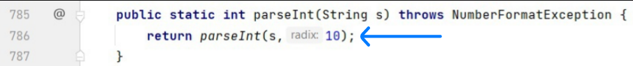
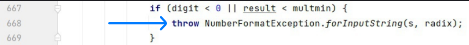
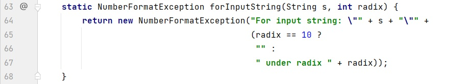
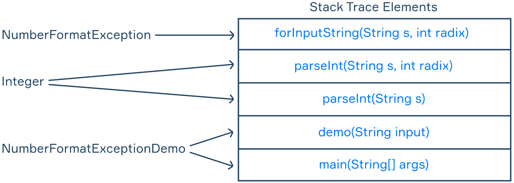

In this topic, you will get acquainted with an important feature that will help you with debugging your applications. That feature is called Stack Trace. It shows the call stack in the application up to the point where the stack trace message was generated. It appears as a message in your IDE when the application throws an error. We will analyze an example of such a situation, learn what a stack trace message can tell us and how to interpret it. You will also learn how to get a stack trace at any point of the program runtime when you need it.
When you were learning about different types of exceptions, we also discussed different ways of throwing exceptions. Now it is time to explore the message behind them. Let's look at the following example:
import java.util.Scanner;
public class NumberFormatExceptionDemo {
public static void main(String[] args) {
Scanner scanner = new Scanner(System.in);
String input = scanner.nextLine();
int number = Integer.parseInt(input); // an exception is possible here!
System.out.println(number + 1);
}
}If we enter a word instead of a number, for instance, "Java," the application throws an error and shows this stack trace message:
Exception in thread "main" java.lang.NumberFormatException: For input string: "Java"
at java.base/java.lang.NumberFormatException.forInputString(NumberFormatException.java:67)
at java.base/java.lang.Integer.parseInt(Integer.java:668)
at java.base/java.lang.Integer.parseInt(Integer.java:786)
at NumberFormatExceptionDemo.main(NumberFormatExceptionDemo.java:8)First, we need to read the top line, where we have three important hints:
NumberFormatException class from java.lang package.Now let's move on and explore the remaining four lines. The very first line from the bottom indicates line 8, which is found in the main method of NumberFormatExceptionDemo class. This is the line of the program whose execution led to the exception. The next invoked method was parseInt(String s) from the Integer class accepting one String argument. Inside this method, another overloaded parseInt(String s, int radix) method from the Integer class was invoked on line 786.

parseInt(String s, int radix) method, on line 668 the application throws an exception invoking the NumberFormatException.forInputString(String s, int radix) method.

Finally, in the fourth line from the bottom, we can see the invocation of the forInputString(String s, int radix) static method from the NumberFormatException class. Below, on line 64, you can see the message from the stack trace example above. That is how the message from the very first line was generated.

Now let's make some changes to our application. We are going to move part of the code to the method so that it will also be called when executing the application.
import java.util.Scanner;
public class NumberFormatExceptionDemo {
public static void main(String[] args) {
Scanner scanner = new Scanner(System.in);
String input = scanner.nextLine();
demo(input);
}
public static void demo(String input) {
int number = Integer.parseInt(input); // an exception is possible here!
System.out.println(number + 1);
}
}This time we have one more line in our stack trace, representing the execution of the demo(String input) method.
Exception in thread "main" java.lang.NumberFormatException: For input string: "Java"
at java.base/java.lang.NumberFormatException.forInputString(NumberFormatException.java:67)
at java.base/java.lang.Integer.parseInt(Integer.java:668)
at java.base/java.lang.Integer.parseInt(Integer.java:786)
at NumberFormatExceptionDemo.demo(NumberFormatExceptionDemo.java:12)
at NumberFormatExceptionDemo.main(NumberFormatExceptionDemo.java:8)If you know what a call stack is, you might have already guessed that in this example you have seen some call stack methods. Basically, this stack trace message shows the call stack from the main method to the place where the exception was thrown.
The following diagram represents the call stack of the example above. Since the call stack is a LIFO data structure, the main(String[] args) method that was called when the application was launched is at the bottom, and it will be the last printed element of the stack trace.

We have shown an example of getting a stack trace after your application throws an error. What if you need to get a stack trace at any specific point? It can be obtained without throwing an error by calling the Thread.currentThread().getStackTrace() method. This way it returns a StackTraceElement array, and you can print the stack trace using a loop.
for (StackTraceElement element : Thread.currentThread().getStackTrace()) {
System.out.println(element);
}There are also other ways of getting a stack trace, such as calling the new Throwable().getStackTrace() or new Throwable().printStackTrace() methods. Here you can explore them on your own.
As you may have noticed, the for loop example above prints an element of the StackTraceElement type. According to the official Java Documentation, the StackTraceElement class is described as an element in a stack trace representing a single stack frame. That is, each element returned by Thread.currentThread().getStackTrace() is a stack frame where the element printed at the top represents the execution point where the stack trace was generated.
Now, let's launch the application and print a stack trace using a for loop we mentioned before.
import java.util.Scanner;
public class NumberFormatExceptionDemo {
public static void main(String[] args) {
Scanner scanner = new Scanner(System.in);
String input = scanner.nextLine();
demo(input);
}
public static void demo(String input) {
for (StackTraceElement element : Thread.currentThread().getStackTrace()) {
System.out.println(element);
}
int number = Integer.parseInt(input); // an exception is possible here!
System.out.println(number + 1);
}
}If we input a number and the application does not throw an exception, the stack trace message will print the following three lines.
java.base/java.lang.Thread.getStackTrace(Thread.java:1610)
NumberFormatExceptionDemo.demo(NumberFormatExceptionDemo.java:13)
NumberFormatExceptionDemo.main(NumberFormatExceptionDemo.java:8)The most useful feature of the StackTraceElement class is that it provides methods to simplify these lines and get only the necessary information. If you print System.out.println(element.getClassName()) inside the mentioned loop, you will get the stack trace message in this form:
java.lang.Thread
NumberFormatExceptionDemo
NumberFormatExceptionDemoOther methods of the class, such as getMethodName() or getLineNumber(), work in a similar way. We will not discuss them in detail here, but we recommend you study all the methods on your own.
In this topic, you learned about Stack trace, a Java language feature that helps you understand the steps of the program execution, and, if necessary, quickly analyze why the application threw an error. At first glance, a stack trace message may seem complex and confusing, but once you get a solid grasp of it, it turns into a useful tool for debugging applications.